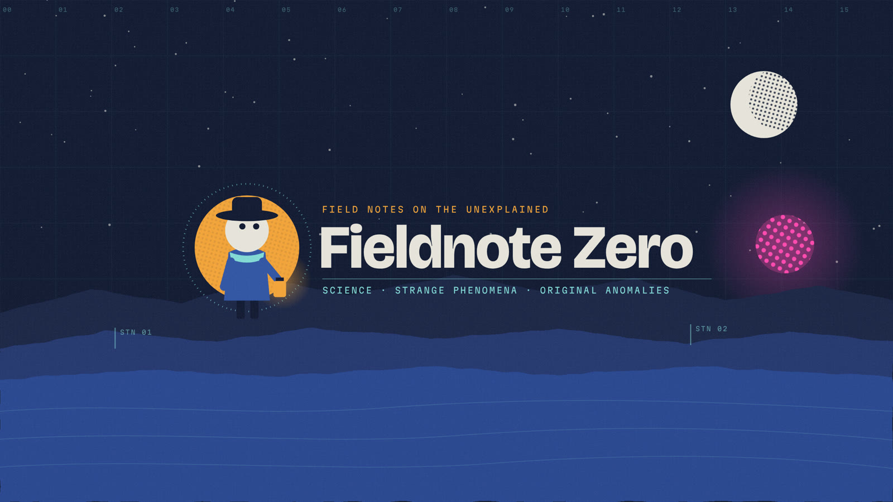

Fieldnote Zero
Fieldnote Zero

Field notes on the unexplained
Fieldnote Zero
An animated field guide to the strange: real science, unexplained phenomena, and original anomaly stories.
Each episode follows the Surveyor, a silent night-shift observer with a lantern and a notebook, into a single case. Real events are researched and fact-checked, with sources listed in every video description. Fiction is always labeled as fiction.
Watch: youtube.com/@fieldnotezerohq
How it's made
Original 2D animation, directed by a human, produced with AI-assisted tools for writing support, animation code, and a synthetic narrator voice. The narrator does not imitate any real person.
Fieldnote Zero Studio Tool
The Fieldnote Zero Studio Tool is a private application used only by the channel's owner to manage the Fieldnote Zero YouTube channel. It is not offered to the public, and no one else can sign in to it.
With the owner's Google authorization it uses the YouTube Data API and YouTube Analytics API to:
- confirm it is connected to the Fieldnote Zero channel before making any change;
- upload the channel's own videos (always as private first), set thumbnails and schedule releases;
- apply the channel's own banner, description and watermark;
- read the channel's performance reports (views, watch time, audience retention, subscribers).
It runs on the owner's computer. Details of exactly what data it accesses and how it is stored are in the privacy policy.